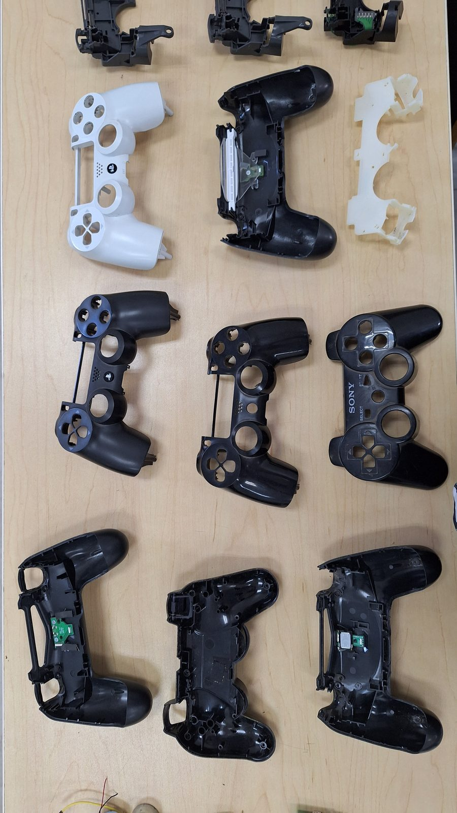
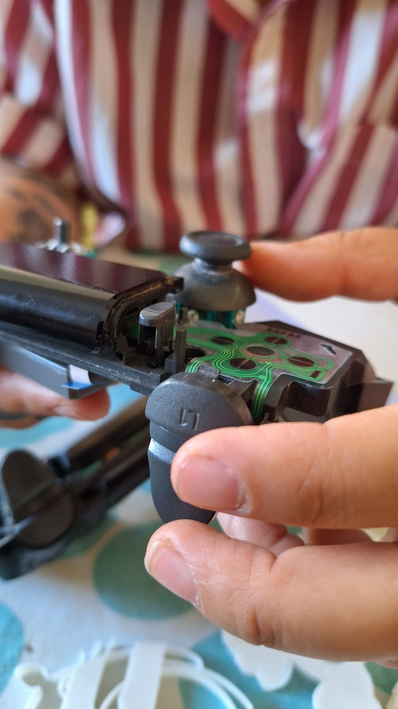
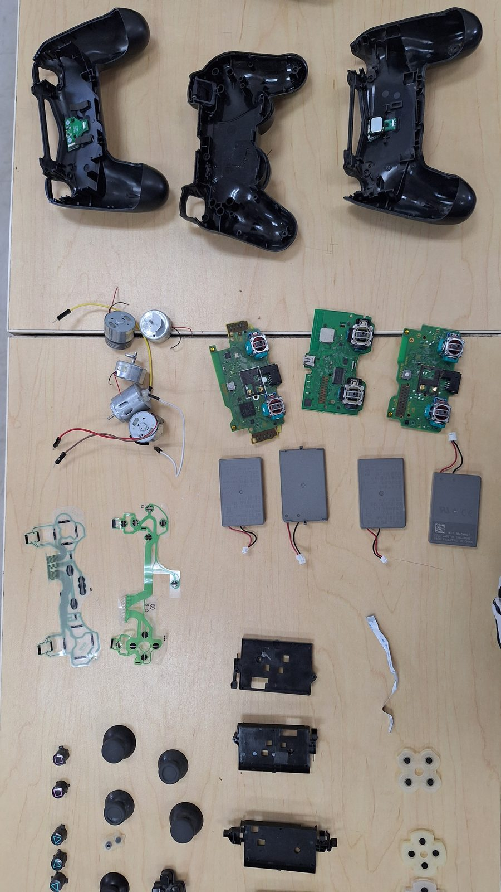
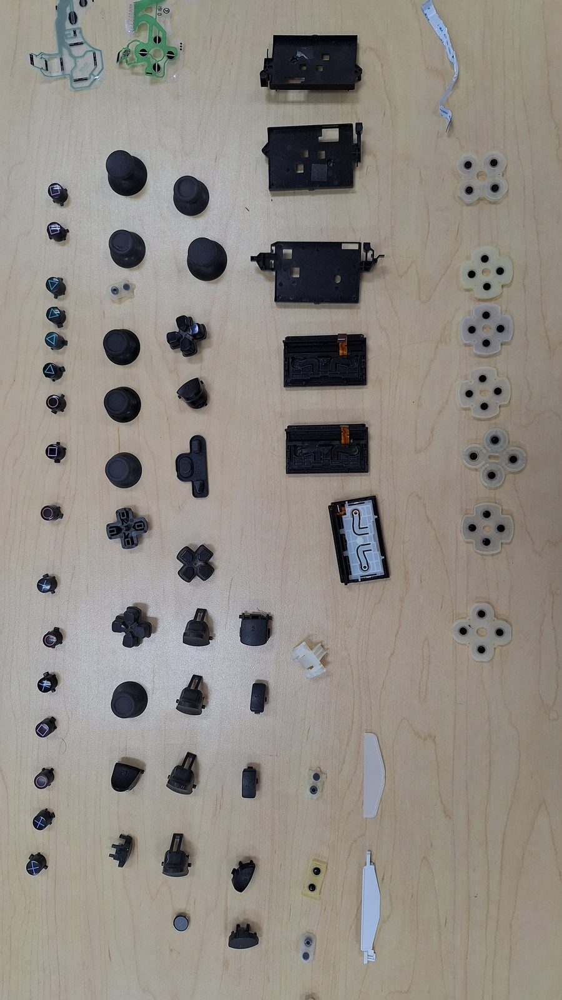
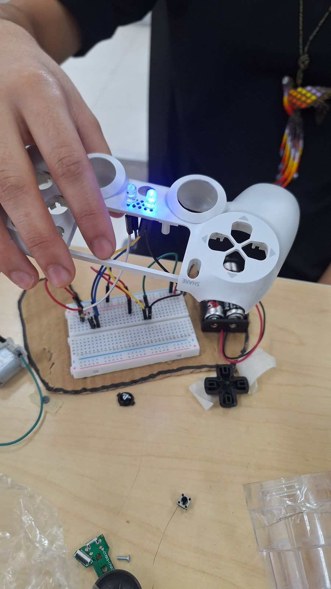
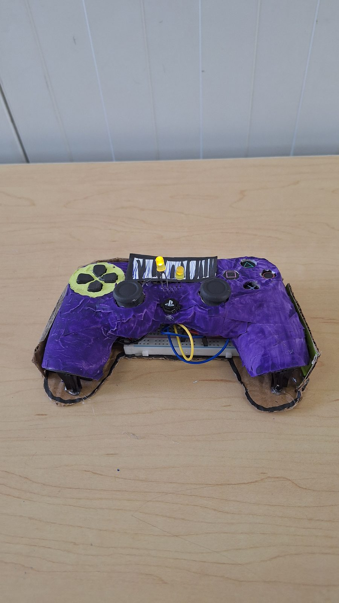
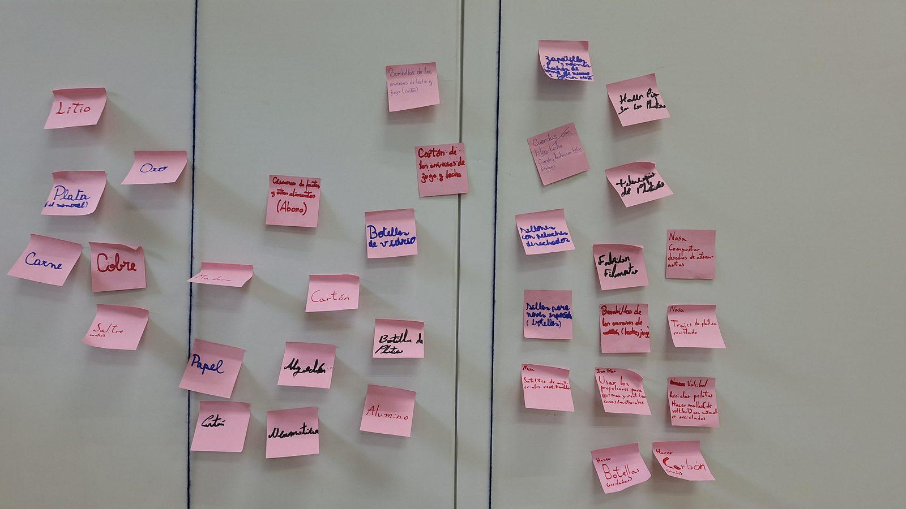

Sostenibilidad en acción
Líderes del cambio para un mundo más verde
Desarmar objetos tecnológicos descartados para entender de qué están hechos, y rediseñarlos con electrónica básica para darles una segunda vida.

La pregunta de entrada era concreta: ¿de qué está hecho lo que botamos? El curso empieza literalmente desarmando: controles de consola que dejaron de funcionar, abiertos con destornillador sobre la mesa hasta dejar cada componente a la vista y catalogado en una materioteca.
Desde ahí el trabajo se vuelve proyectual. Con los Objetivos de Desarrollo Sostenible de la ONU y los principios de la economía circular como marco, cada equipo eligió un objeto cotidiano y lo rediseñó para reducir la cantidad de residuos que genera. La electrónica básica fue la herramienta que permitió que esos rediseños encendieran, se movieran y funcionaran de verdad.
Al ser un curso de verano, la intensidad es otra: nueve sesiones seguidas de lunes a viernes, lo que obliga a un ritmo de proyecto mucho más comprimido que un semestre.
Curso de creación propia
Propuesta, programa, metodología y material diseñados por mí para la Temporada Académica de Verano de PENTA UC.
Temario
- 01Residuos y objetos cotidianosReconocer las problemáticas de la gestión de residuos y la sostenibilidad de los objetos artificiales.
- 02Conceptos claveEconomía circular, Objetivos de Desarrollo Sostenible y sociedad de consumo.
- 03Desarmar para entenderDesarme de objetos tecnológicos y construcción de una materioteca con los componentes.
- 04Definir la problemáticaSelección del objeto a rediseñar y definición del usuario.
- 05PrototiparElectrónica básica aplicada al rediseño del objeto elegido.
- 06Presentación de avancesPrimeras versiones frente al curso.
- 07CorreccionesAjustes a partir de la retroalimentación entre pares.
- 08Evaluación finalExposición de los objetos rediseñados a un público específico.
- 09CierreRetroalimentación y reflexión sobre el proceso completo.
Registro






